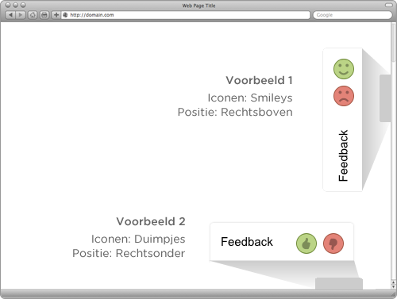

CloseAlert customer feedback software
Documentatie voor ontwikkelaars
Voorbeeld
Instellingen
Javascript-code voor implementatie
Customizen
Cookies
Op deze pagina staan de instructies beschreven om CloseAlert op uw website te implementeren.

Plaats onderstaande code vlak voor de afsluitende </body> tag.
<script type="text/javascript" language="javascript">
(function(b){function c(){var a=document.createElement("script");a.type="text/javascript";a.async=!0;a.src=("https:"==b.location.protocol?"https:":"http:")+"//analytics.closealert.com/s/ws/v2/ca.js";document.getElementsByTagName("body")[0].appendChild(a)}var a={q:[],c:function(b){return function(){a.q.push([b,arguments])}}};a.setting=a.c("setting");a.feedbackParam=a.c("feedbackParam");a.trackPageview=a.c("trackPageview");a.locale=a.c("locale");b.__clslrt=a;b.attachEvent?b.attachEvent("onload",c):b.addEventListener("load",c,!1)})(window);
__clslrt.setting('id', '32vR49');__clslrt.setting('position', 'right');__clslrt.setting('language', 'nl');__clslrt.setting('icons', 'faces');__clslrt.setting('noemail', true);
__clslrt.trackPageview();
</script>
CloseAlert plaatst automatisch cookies op de computer van de bezoeker om het navigatiepad op uw site bij te houden. Dankzij deze cookies kunt u in het dashboard terugzien op welke manier een bezoeker door uw site is gelopen voordat hij/zij feedback gaf.
Mocht u deze cookies willen uitschakelen, dan is dit mogelijk door de volgende regel toe te voegen aan de CloseAlert code:
__clslrt.setting("notrack", true);De code voor CloseAlert voor websites is geschreven om maximale flexibiliteit te geven aan de webmaster. Hierdoor kunt u zowel de tekstals het uiterlijk geheel aanpassen aan uw organisatie.
Om de tekst aan te passen kunt u gebruikmaken van de functie __clslrt.locale. Deze functie heeft de volgene syntax:
__clslrt.locale("<TAAL_ID>", {
<BERICHT_ID>: "<Tekst voor BERICHT_ID>",
<TEKST_ID>: "<Tekst voor TEKST_ID>"
});<TAAL_ID> Het tweeletterige id van de taal, bijv. nl voor Nederlands<TEKST_ID> Het id van de tekst, bijv. widgetTitleMobile voor de tekst die in de mobiele weergave naast de knoppen staat of messagePlaceholderPos voor de tekst die bij positieve feedback in het tekstvak staat.De volledige taalconfiguratie voor Nederlands is als volgt:
__clslrt.locale({
titlePos: 'positieve feedback',
titleNeg: 'negatieve feedback',
messagePlaceholderPos: 'vertel even kort waarom je positief bent over deze pagina',
messagePlaceholderNeg: 'vertel even kort waarom je negatief bent over deze pagina',
widgetTitle: 'Feedback',
widgetTitleMobile: 'Feedback',
emailPlaceholder: 'e-mailadres...',
send: 'stuur',
sending: 'Bezig met versturen...',
sent: 'we hebben je feedback ontvangen!',
messageTooShort: 'je bericht is te kort',
emailIncorrect: 'je e-mailadres is niet juist',
and: 'en'
});